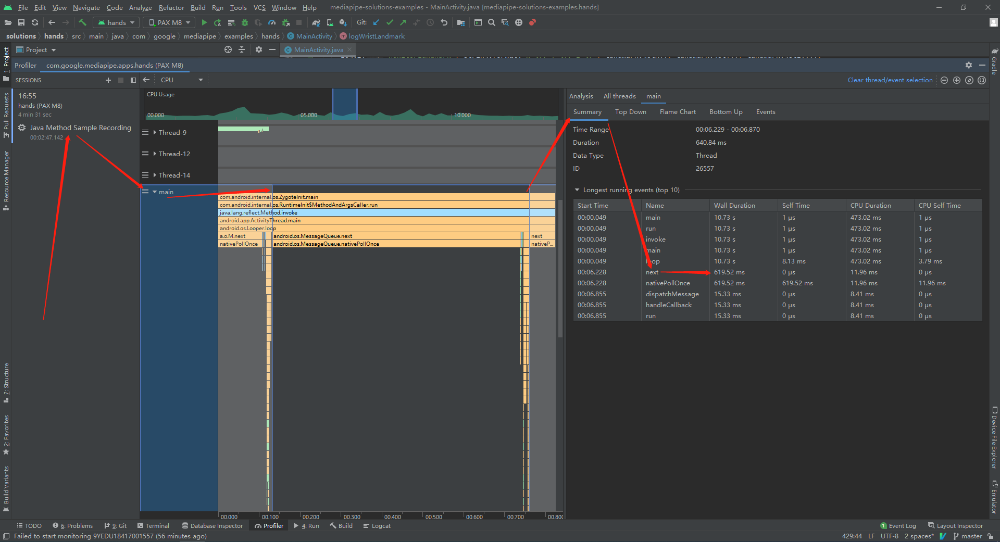

Hand Turn Page Performance
Hand Turn Page的性能分析，有些机型没有GPU，有些没有NPU
log diff
@@ -82,7 +102,10 @@ public class MainActivity extends AppCompatActivity {
if (inputSource == InputSource.CAMERA) {
// Restarts the camera and the opengl surface rendering.
cameraInput = new CameraInput(this);
- cameraInput.setNewFrameListener(textureFrame -> hands.send(textureFrame));
+ cameraInput.setNewFrameListener(textureFrame -> {
+ Log.e("HandTurnPagePerformance", "Get Frame From Camera Over");
+ hands.send(textureFrame);
+ });
glSurfaceView.post(this::startCamera);
glSurfaceView.setVisibility(View.VISIBLE);
} else if (inputSource == InputSource.VIDEO) {
@@ -277,7 +300,10 @@ public class MainActivity extends AppCompatActivity {
if (inputSource == InputSource.CAMERA) {
cameraInput = new CameraInput(this);
- cameraInput.setNewFrameListener(textureFrame -> hands.send(textureFrame));
+ cameraInput.setNewFrameListener(textureFrame -> {
+ Log.e("HandTurnPagePerformance", "Get Frame From Camera Over");
+ hands.send(textureFrame);
+ });
} else if (inputSource == InputSource.VIDEO) {
videoInput = new VideoInput(this);
videoInput.setNewFrameListener(textureFrame -> hands.send(textureFrame));
@@ -290,9 +316,11 @@ public class MainActivity extends AppCompatActivity {
glSurfaceView.setRenderInputImage(true);
hands.setResultListener(
handsResult -> {
+ Log.e("HandTurnPagePerformance", "End Of MediaPipe Processed");
logWristLandmark(handsResult, /*showPixelValues=*/ false);
glSurfaceView.setRenderData(handsResult);
glSurfaceView.requestRender();
+ Log.e("HandTurnPagePerformance", "End Of HandTurnPage Processed");
});
// The runnable to start camera after the gl surface view is attached.
capture log
获取数据
adb shell logcat -s HandTurnPagePerformance
数据保存到：default/HandTurnPagePerformance.txt
数据分析
logcat log分析脚本：0007_HandTurnPagePerformance.py
python3 LogTools.py HandTurnPagePerformance
使用荣耀手机，并加入训练的HandTurnPage功能，绘图效率如下
使用荣耀手机，不加入训练的HandTurnPage功能，绘图效率如下
红点表示处理一张摄像头获取的图片耗时
对比发现，后面这台机器的性能差，和摄像头没关系，是摄像头数据处理慢
另外也可以通过Android Studio的Profiler的CPU中的函数栈分析进行查看
Android Studio Profiler
Record

Choreographer调用出现严重延迟

函数调用栈
上下左右识别
添加layout
<LinearLayout
android:id="@+id/directions"
android:layout_width="match_parent"
android:layout_height="wrap_content"
style="?android:attr/buttonBarStyle" android:gravity="center"
android:orientation="horizontal">
<Button
android:id="@+id/left"
android:layout_width="wrap_content"
android:layout_height="wrap_content"
android:text="left" />
<Button
android:id="@+id/up"
android:layout_width="wrap_content"
android:layout_height="wrap_content"
android:text="up" />
<Button
android:id="@+id/down"
android:layout_width="wrap_content"
android:layout_height="wrap_content"
android:text="down" />
<Button
android:id="@+id/right"
android:layout_width="wrap_content"
android:layout_height="wrap_content"
android:text="right" />
</LinearLayout>
修改Camera预览居中，主要是有些机型是横屏的
<FrameLayout
android:id="@+id/preview_display_layout"
android:layout_gravity="center"
android:layout_width="wrap_content"
android:layout_height="wrap_content">
<TextView
android:id="@+id/no_view"
android:layout_width="match_parent"
android:layout_height="wrap_content"
android:gravity="center"
android:text="@string/instruction" />
</FrameLayout
完整MidiaPipe处理diff
diff --git a/mediapipe/examples/android/solutions/hands/build.gradle b/mediapipe/examples/android/solutions/hands/build.gradle
index 6c21109..76457d5 100644
--- a/mediapipe/examples/android/solutions/hands/build.gradle
+++ b/mediapipe/examples/android/solutions/hands/build.gradle
@@ -38,4 +38,6 @@ dependencies {
// MediaPipe Hands Solution.
implementation 'com.google.mediapipe:solution-core:latest.release'
implementation 'com.google.mediapipe:hands:latest.release'
+
+ implementation 'org.tensorflow:tensorflow-lite:2.7.0'
}
diff --git a/mediapipe/examples/android/solutions/hands/src/main/java/com/google/mediapipe/examples/hands/MainActivity.java b/mediapipe/examples/android/solutions/hands/src/main/java/com/google/mediapipe/examples/hands/MainActivity.java
index d93f9b1..bbc4652 100644
--- a/mediapipe/examples/android/solutions/hands/src/main/java/com/google/mediapipe/examples/hands/MainActivity.java
+++ b/mediapipe/examples/android/solutions/hands/src/main/java/com/google/mediapipe/examples/hands/MainActivity.java
@@ -15,15 +15,20 @@
package com.google.mediapipe.examples.hands;
import android.content.Intent;
+import android.content.res.AssetFileDescriptor;
import android.graphics.Bitmap;
+import android.graphics.Color;
import android.graphics.Matrix;
import android.os.Bundle;
import android.provider.MediaStore;
import androidx.appcompat.app.AppCompatActivity;
import android.util.Log;
import android.view.View;
+import android.view.ViewGroup;
import android.widget.Button;
import android.widget.FrameLayout;
+import android.widget.RelativeLayout;
+
import androidx.activity.result.ActivityResultLauncher;
import androidx.activity.result.contract.ActivityResultContracts;
import androidx.exifinterface.media.ExifInterface;
@@ -37,14 +42,28 @@ import com.google.mediapipe.solutions.hands.HandLandmark;
import com.google.mediapipe.solutions.hands.Hands;
import com.google.mediapipe.solutions.hands.HandsOptions;
import com.google.mediapipe.solutions.hands.HandsResult;
+
+import org.tensorflow.lite.Interpreter;
+
+import java.io.FileInputStream;
import java.io.IOException;
import java.io.InputStream;
+import java.nio.ByteBuffer;
+import java.nio.FloatBuffer;
+import java.nio.channels.FileChannel;
+import java.util.ArrayList;
+import java.util.Arrays;
/** Main activity of MediaPipe Hands app. */
public class MainActivity extends AppCompatActivity {
private static final String TAG = "MainActivity";
private Hands hands;
+ public Interpreter interpreter = null;
+ public String[] label = {"fist", "palm"};
+ public ArrayList<Button> buttons = new ArrayList<>();
+ public MotionData preMotionData = null;
+ public int maxAt = 0;
// Run the pipeline and the model inference on GPU or CPU.
private static final boolean RUN_ON_GPU = true;
@@ -74,6 +93,22 @@ public class MainActivity extends AppCompatActivity {
setupStaticImageDemoUiComponents();
setupVideoDemoUiComponents();
setupLiveDemoUiComponents();
+
+ try {
+ interpreter = new Interpreter(loadModelFile("HandTurnPage"));
+ interpreter.allocateTensors();
+
+ buttons.add(findViewById(R.id.up));
+ buttons.add(findViewById(R.id.left));
+ buttons.add(findViewById(R.id.right));
+ buttons.add(findViewById(R.id.down));
+ for (Button button : buttons) {
+ button.setBackgroundColor(Color.WHITE);
+ }
+
+ } catch (IOException e) {
+ e.printStackTrace();
+ }
}
@Override
@@ -82,7 +117,10 @@ public class MainActivity extends AppCompatActivity {
if (inputSource == InputSource.CAMERA) {
// Restarts the camera and the opengl surface rendering.
cameraInput = new CameraInput(this);
- cameraInput.setNewFrameListener(textureFrame -> hands.send(textureFrame));
+ cameraInput.setNewFrameListener(textureFrame -> {
+ Log.e("HandTurnPagePerformance", "Get Frame From Camera Over");
+ hands.send(textureFrame);
+ });
glSurfaceView.post(this::startCamera);
glSurfaceView.setVisibility(View.VISIBLE);
} else if (inputSource == InputSource.VIDEO) {
@@ -277,7 +315,10 @@ public class MainActivity extends AppCompatActivity {
if (inputSource == InputSource.CAMERA) {
cameraInput = new CameraInput(this);
- cameraInput.setNewFrameListener(textureFrame -> hands.send(textureFrame));
+ cameraInput.setNewFrameListener(textureFrame -> {
+ Log.e("HandTurnPagePerformance", "Get Frame From Camera Over");
+ hands.send(textureFrame);
+ });
} else if (inputSource == InputSource.VIDEO) {
videoInput = new VideoInput(this);
videoInput.setNewFrameListener(textureFrame -> hands.send(textureFrame));
@@ -290,9 +331,11 @@ public class MainActivity extends AppCompatActivity {
glSurfaceView.setRenderInputImage(true);
hands.setResultListener(
handsResult -> {
+ Log.e("HandTurnPagePerformance", "End Of MediaPipe Processed");
logWristLandmark(handsResult, /*showPixelValues=*/ false);
glSurfaceView.setRenderData(handsResult);
glSurfaceView.requestRender();
+ Log.e("HandTurnPagePerformance", "End Of HandTurnPage Processed");
});
// The runnable to start camera after the gl surface view is attached.
@@ -307,6 +350,12 @@ public class MainActivity extends AppCompatActivity {
frameLayout.removeAllViewsInLayout();
frameLayout.addView(glSurfaceView);
glSurfaceView.setVisibility(View.VISIBLE);
+
+ ViewGroup.LayoutParams params = glSurfaceView.getLayoutParams();
+ params.width = 480;
+ params.height = 640;
+ glSurfaceView.setLayoutParams(params);
+
frameLayout.requestLayout();
}
@@ -369,5 +418,99 @@ public class MainActivity extends AppCompatActivity {
"MediaPipe Hand wrist world coordinates (in meters with the origin at the hand's"
+ " approximate geometric center): x=%f m, y=%f m, z=%f m",
wristWorldLandmark.getX(), wristWorldLandmark.getY(), wristWorldLandmark.getZ()));
+
+ Log.i("MonitorLandMark", "start capture data");
+ float[] inputs = new float[21 * 3];
+ int i = 0;
+ for (Landmark landmark : result.multiHandWorldLandmarks().get(0).getLandmarkList()) {
+ Log.i("MonitorLandMark", String.format("x=%f, y=%f, z=%f", landmark.getX(), landmark.getY(), landmark.getZ()));
+ inputs[i] = landmark.getX() * -1;
+ inputs[i + 21] = landmark.getY();
+ inputs[i + 21 + 21] = landmark.getZ();
+
+ i++;
+ }
+ Log.i("MonitorLandMark", "end capture data");
+
+ FloatBuffer input = FloatBuffer.allocate(interpreter.getInputTensor(0).numElements());
+ input.put(inputs);
+
+ FloatBuffer output = FloatBuffer.allocate(interpreter.getOutputTensor(0).numElements());
+ interpreter.run(inputs, output);
+
+ float[] outputs = output.array();
+ for (int j = 0; j < outputs.length; j++) {
+ maxAt = outputs[j] > outputs[maxAt] ? j : maxAt;
+ }
+
+ Log.e(TAG, Arrays.toString(output.array()) + " -> " + maxAt + " -> " + label[maxAt]);
+
+ int width = result.inputBitmap().getWidth();
+ int height = result.inputBitmap().getHeight();
+ MotionData motionData = new MotionData();
+ for (NormalizedLandmark landmark : result.multiHandLandmarks().get(0).getLandmarkList()) {
+ motionData.x += wristLandmark.getX() * width;
+ motionData.y += wristLandmark.getY() * height;
+ }
+ motionData.x /= 21;
+ motionData.y /= 21;
+ motionData.motion = label[maxAt];
+
+ if (preMotionData == null) {
+ preMotionData = motionData;
+ } else {
+ if (preMotionData.motion == "palm" && motionData.motion == "palm") {
+ int xOffset = motionData.x - preMotionData.x;
+ int yOffset = motionData.y - preMotionData.y;
+ String direction = "static";
+
+ Log.e(TAG, "x offset: " + (motionData.x - preMotionData.x));
+ Log.e(TAG, "y offset: " + (motionData.y - preMotionData.y));
+
+ if (xOffset > 50 && xOffset > yOffset + 15) {
+ direction = "right";
+ } else if (xOffset < -50 && xOffset < yOffset - 15) {
+ direction = "left";
+ } else if (yOffset > 50 && xOffset + 15 < yOffset) {
+ direction = "down";
+ } else if (yOffset < -50 && xOffset - 15 > yOffset) {
+ direction = "up";
+ }
+
+ String finalDirection = direction;
+ runOnUiThread(() -> {
+ setTitle(finalDirection);
+ });
+
+ for (Button button : buttons) {
+ if (button.getText().equals(direction)) {
+ runOnUiThread(() -> {
+ button.setBackgroundColor(Color.YELLOW);
+ });
+ } else {
+ runOnUiThread(() -> {
+ button.setBackgroundColor(Color.WHITE);
+ });
+ }
+ }
+ }
+ }
+
+ preMotionData = motionData;
+ }
+
+ private ByteBuffer loadModelFile(String model) throws IOException {
+ AssetFileDescriptor fileDescriptor = getApplicationContext().getAssets().openFd(model + ".tflite");
+ FileInputStream inputStream = new FileInputStream(fileDescriptor.getFileDescriptor());
+ FileChannel fileChannel = inputStream.getChannel();
+ long startOffset = fileDescriptor.getStartOffset();
+ long declaredLength = fileDescriptor.getDeclaredLength();
+ return fileChannel.map(FileChannel.MapMode.READ_ONLY, startOffset, declaredLength);
+ }
+
+ public class MotionData {
+ public String motion = "fist";
+ public int x = 0;
+ public int y = 0;
}
}